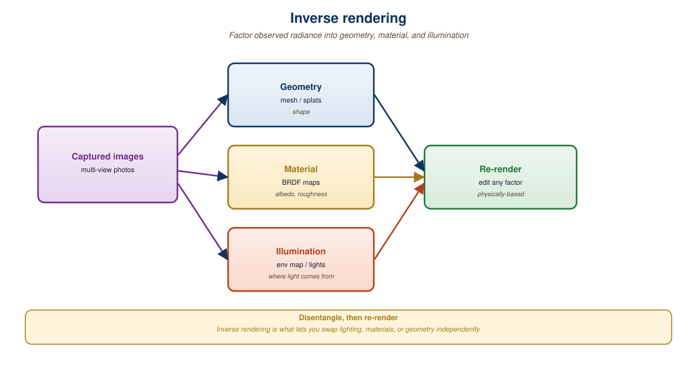

"Lighting is the secret subject of every photograph. With neural fields, it's finally something you can also edit."
Pixel, Relighting-Obsessed AI Agent
A captured 3D scene bakes in the original lighting. Relighting it requires inverse rendering: factoring observed radiance into geometry, material (BRDF), and illumination. Once factored, you can change the illumination, render the scene under a new environment map, or composite it with other lit assets. The same factorization unlocks geometry editing (move the chair, swap the chair model) and material editing (make the wood look like marble). This section walks through three threads: classical inverse rendering for radiance fields, the IC-Light pretrained relighting prior, and language-grounded 3D editing tools driven by multimodal LLMs. The LLM and agent angle: a vision-language agent that accepts an instruction like "relight this scene as a sunset and move the chair to the right" must translate the natural-language edit into a structured call against an inverse-rendering pipeline, which is exactly the integration this section enables.
Prerequisites
This section assumes the 3D scene representations from Section 23.1, the inverse-rendering and BRDF basics from Section 23.3, and the language-grounding patterns from VLMs in Section 22.4.

23.5.1 Inverse Rendering Fundamentals
The Kajiya rendering equation, which underlies every inverse-rendering pipeline including modern neural relighting, was published in 1986 as a 9-page SIGGRAPH paper that contained no implementation. James Kajiya was working at Caltech and reportedly produced the closed-form integral as a side note while building his real research goal (Monte Carlo path tracing). The equation now appears on the office walls of roughly half of all graphics-research labs.
The forward rendering equation (Kajiya, 1986) states that the outgoing radiance at a point $x$ in direction $\omega_o$ is:
$$ L_o(x, \omega_o) = \int_\Omega f_r(x, \omega_i, \omega_o)\, L_i(x, \omega_i)\, (\omega_i \cdot n)\, d\omega_i $$
where $f_r$ is the BRDF (material), $L_i$ is the incoming radiance (illumination), and $n$ is the surface normal. Inverse rendering solves for $f_r$ and $L_i$ given $L_o$ from multiple views, along with the geometry implied by $n$.
For neural fields, the standard recipe extends a NeRF or 3DGS with explicit material and illumination heads:
- The geometry head outputs a density (NeRF) or Gaussian distribution (3DGS).
- The material head outputs a BRDF, typically a Disney principled BRDF or an analytical GGX model.
- The illumination head outputs an environment map, often parameterized as spherical Gaussians or low-order spherical harmonics for efficiency.
The full rendering integral is approximated through Monte Carlo sampling, importance sampling on either the BRDF lobe or the environment map. Methods like NeRFactor (Zhang et al., 2021), TensoIR (Jin et al., 2023), and Relightable 3D Gaussian (Gao et al., 2024) follow this template with different geometric backbones.
Any observed radiance $L_o$ can be explained by many combinations of material and lighting. A pale chair under blue lighting and a blue chair under white lighting produce identical pixels. Inverse rendering must commit to one explanation, and the commitment comes from priors: smoothness of the environment map, plausibility of the BRDF parameters (real materials have constrained albedos), and consistency across views. This is conceptually the same regularization story that bridges prompt engineering (where many prompts explain similar outputs) and the rest of generative modeling.
23.5.2 IC-Light: The Pretrained Relighting Prior
IC-Light (Zhang et al., 2024), released by the ControlNet author, took a different route. Instead of solving the full inverse rendering problem, IC-Light frames relighting as a 2D image-to-image task. The model is a Stable Diffusion fine-tune that takes (foreground image with mask, desired lighting condition) and outputs a relit foreground.
Lighting conditions come in two flavors:
- Text-conditioned: a prompt like "sunset, soft golden light from the left."
- Image-conditioned: an environment map or a background image whose lighting the model should infer and apply.
The breakthrough was IC-Light's training scheme: a self-supervised consistency loss enforces that the relit foreground, when composited with the implied background, matches the original lighting cues. This sidesteps explicit BRDF estimation while still producing physically reasonable results.
# IC-Light inference: relight a foreground image given a target
# background that defines the desired illumination.
from ic_light import ICLight
from PIL import Image
pipe = ICLight.from_pretrained("lllyasviel/ic-light").cuda()
fg = Image.open("product_photo.png").convert("RGBA")
bg = Image.open("warm_studio_bg.jpg")
relit = pipe(
foreground=fg,
background=bg,
prompt="warm studio key light from upper left, soft fill",
strength=0.85,
guidance_scale=2.5,
).images[0]
relit.save("product_relit.png")
# For 3D relighting, render each view from the splat, run IC-Light per view,
# then either (a) use the relit views as supervision for a new splat fine-tune,
# or (b) bake the per-pixel lighting deltas back into the original Gaussians.The deeper lesson of IC-Light is that you do not always need a complete physical decomposition to get useful editing. A learned 2D prior that knows "what relit objects look like" is enough for most production use cases, and it dodges the ill-posedness of true inverse rendering. The trade-off: IC-Light does not give you handles for material parameters, only for the final appearance. If you need to swap material from leather to chrome, you still want a proper BRDF estimate.
23.5.3 Relightable 3D Gaussians (2024)
Relightable 3D Gaussian (Gao et al., 2024) extends each Gaussian with explicit material parameters: an albedo color, a roughness scalar, a metallic scalar, and a per-Gaussian normal. The illumination is a low-resolution environment map represented by 4th-order spherical harmonics. Each rendered pixel is evaluated through the Disney principled BRDF.
The training loop is similar to vanilla 3DGS but with three extra losses:
- Standard photometric loss against the captured views.
- A monochromatic regularizer that nudges shadowed regions toward grayscale (encouraging the illumination, not the albedo, to vary with view).
- A smoothness regularizer on the normals.
Output: a 3DGS scene whose albedo, geometry, and lighting can each be independently changed. Swap the environment map and re-render; the scene relights with correct shadows and specular highlights.
23.5.4 Language-Grounded 3D Editing
Editing a captured 3D scene with text prompts is the natural next step after generating one. Two families of tools dominate:
- Instruct-NeRF2NeRF (Haque et al., 2023) and its successors: edit a NeRF or 3DGS by iteratively re-rendering views, modifying them with InstructPix2Pix or Magic-Brush, and fine-tuning the 3D representation toward the edited views.
- SAM-grounded splat selection: tools like GaussianEditor and SuperSplat attach a CLIP or SAM feature to each Gaussian. Text or click selects a subset of Gaussians; the user can then translate, rotate, delete, or restyle them.
Steps
The Segment Anything Model is a promptable segmenter: given an image plus a prompt (a click point, a box, or a rough mask) it returns the object mask under that prompt. It has three parts. A heavy ViT image encoder runs once per image to produce a dense embedding. A lightweight prompt encoder turns clicks and boxes into prompt tokens. A fast transformer mask decoder then cross-attends the prompt tokens against the image embedding and emits a few candidate masks with confidence scores, resolving the ambiguity of an underspecified click. Because the expensive encoding is amortized, each new prompt yields a mask in milliseconds, which is what makes interactive click-to-select editing practical.
import torch
from PIL import Image
from transformers import SamModel, SamProcessor
processor = SamProcessor.from_pretrained("facebook/sam-vit-base")
model = SamModel.from_pretrained("facebook/sam-vit-base").eval()
image = Image.open("scene.jpg").convert("RGB")
input_points = [[[450, 600]]] # one click at pixel (450, 600)
inputs = processor(image, input_points=input_points, return_tensors="pt")
with torch.no_grad():
outputs = model(**inputs)
# Three candidate masks per prompt; pick the highest IoU score.
masks = processor.image_processor.post_process_masks(
outputs.pred_masks.cpu(), inputs["original_sizes"].cpu(),
inputs["reshaped_input_sizes"].cpu(),
)
scores = outputs.iou_scores[0, 0].tolist()
best = scores.index(max(scores))
print(f"Picked mask {best} with IoU score {scores[best]:.3f}")model(**inputs) call (the bulk of the latency); subsequent calls on the same image with fresh prompts can reuse the cached image embedding by passing image_embeddings=outputs.image_embeddings, which is what makes interactive editing tools (GaussianEditor, SuperSplat) feel responsive.The mask decoder's behaviour is captured by two equations. Writing $\mathbf{F} \in \mathbb{R}^{H \times W \times 256}$ for the image embedding ($H = W = 64$ for SAM's $1024 \times 1024$ input), $\mathbf{P} \in \mathbb{R}^{N \times 256}$ for the prompt tokens, and three learnable output tokens $\{\mathbf{m}_1, \mathbf{m}_2, \mathbf{m}_3\}$ plus one IoU token $\mathbf{q}$, the decoder runs two-way cross-attention to produce updated tokens $\{\tilde{\mathbf{m}}_k\}$ and $\tilde{\mathbf{q}}$ and updated image features $\tilde{\mathbf{F}}$. Each mask is then a per-pixel dot product, and each IoU prediction is a small MLP head on the IoU token:
The selected output mask is the one with the largest predicted IoU, $k^\star = \arg\max_k \hat{\mathrm{IoU}}_k$, and the IoU head is trained with an MSE regression loss against the true IoU between $\hat{\mathbf{M}}_k$ (thresholded at $0.5$) and the ground-truth mask. The three output tokens specialize during training to "whole / part / subpart" candidates, which is why a single ambiguous click on a person can simultaneously propose the whole body, the upper torso, and just the shirt.
Consider a $1024 \times 1024$ photo of a cyclist in front of a wall. The ViT-H encoder produces the dense embedding $\mathbf{F}$ in one $\approx 600$ ms forward pass and the application caches it. The user clicks pixel $(450, 600)$ on the cyclist's chest. The prompt encoder turns the click into a single $256$-dim positional token plus a "foreground" type token, so $\mathbf{P} \in \mathbb{R}^{2 \times 256}$. The mask decoder runs in $\approx 4$ ms and returns three masks with predicted IoU scores $\hat{\mathrm{IoU}}_{1:3} = [0.61,\ 0.85,\ 0.72]$, corresponding to {whole cyclist + bike, cyclist's torso, cyclist's jersey}. The application picks $k^\star = 2$ and shows the torso mask.
The user wants the whole cyclist and the bike, not just the torso, so they refine with a bounding-box prompt covering the rider plus bike, say $(290, 110)$ to $(720, 900)$. The two corner points encode as $\mathbf{P}' \in \mathbb{R}^{2 \times 256}$ with "top-left" and "bottom-right" type tokens, and the cached image embedding is reused so only the $\approx 4$ ms decoder pass runs. The new IoU scores come back as $[0.94,\ 0.81,\ 0.66]$ and the first mask, now confidently covering both rider and bike, is selected. Total interactive cost after the initial image encoding is two decoder passes of $\approx 8$ ms, which is what allows GaussianEditor to lift the mask into a 3D Gaussian selection in roughly one animation frame.
# Instruct-NeRF2NeRF-style edit loop in pseudocode.
# Iteratively replaces training views with edited ones,
# then fine-tunes the 3D scene to match.
from diffusers import StableDiffusionInstructPix2PixPipeline
editor = StableDiffusionInstructPix2PixPipeline.from_pretrained(
"timbrooks/instruct-pix2pix"
).to("cuda")
prompt = "Turn the chair into a wicker armchair"
for step in range(edit_steps):
view_idx = random.randint(0, len(cameras) - 1)
current = render_view(gaussians, cameras[view_idx])
# Edit the rendered view with InstructPix2Pix
edited = editor(
prompt, image=current,
image_guidance_scale=1.5,
guidance_scale=7.5,
).images[0]
# Replace the training view with the edited one
training_views[view_idx] = edited
# Continue 3DGS fine-tuning on the updated training set
fine_tune_step(gaussians, training_views, cameras)23.5.5 Failure Modes and the Consistency Tax
The most common failure mode in 3D editing is view-inconsistent edits. InstructPix2Pix is stochastic; edited views may show the wicker pattern in incompatible ways. The iterative fine-tune of Instruct-NeRF2NeRF averages over these inconsistencies but can produce blurry results. Three remedies are common:
- Joint multi-view editing: use MVDream-style editing models that produce consistent multi-view edits in a single pass.
- Masked editing: restrict the edit to a SAM-segmented region so unrelated parts of the scene do not drift.
- Edit-Anything-with-3DGS: directly modify Gaussian parameters (color, opacity, position) for the selected Gaussians instead of going through a 2D editor.
If you swap an object in a captured 3DGS scene, the shadows from the old object are still baked into the surrounding Gaussians' colors. The edited scene will look uncanny: the new chair, but with the old chair's shadow on the floor. Solutions are either to re-light from scratch with a Relightable 3D Gaussian decomposition or to ask IC-Light to relight the rendered views. Plain Instruct-NeRF2NeRF will not fix this on its own.
23.5.6 Composition and Export
The last step in a production workflow is composition: placing a relit, edited 3D asset into a target scene. This requires aligning lighting, ground plane, and scale. The 2025 toolchain typically:
- Estimates the target scene's environment map (via a model like StyleLight or via HDR capture).
- Re-relights the inserted asset under that environment map (IC-Light, Relightable 3D Gaussian).
- Estimates a shadow plane and adds a synthetic shadow.
- Exports the composed result to a target renderer (Unreal, Blender, Three.js).
For a fully end-to-end example connecting capture, relighting, edit, and export, see the LumaAI Splat Tools and the Polycam SDK docs.
A 2025 architectural firm captured a client's existing kitchen as a 3DGS scene. Using Relightable 3D Gaussian, the team estimated material parameters for the cabinets, then applied a text-driven edit ("matte black cabinets with brass handles") via Instruct-NeRF2NeRF. The relit scene was then composited under three lighting environments (sunrise, midday, evening) for the client review. End-to-end pipeline ran in 4 hours on a single A100, replacing what was previously a 2-week manual modeling job.
Editing and relighting are the bridge between captured 3D and production-ready 3D. Classical inverse rendering decomposes appearance into geometry, material, and illumination; Relightable 3D Gaussian and TensoIR are the state-of-the-art instantiations. IC-Light skips the explicit decomposition with a learned 2D relighting prior, which suffices for most appearance edits. Geometry and material edits are dominated by Instruct-NeRF2NeRF-style loops with InstructPix2Pix, plus SAM-grounded splat selection for surgical edits. The persistent challenge is multi-view consistency, especially for shadows and reflections.
3D generation has shifted from NeRF-based representations to fast-rendering Gaussian splatting and feed-forward priors. The frontier in 2024-2026 hinges on three open problems. First, real-time generative 3D from a single image or prompt: TripoSR (Tochilkin et al., TripoSR: Fast 3D Object Reconstruction from a Single Image, arXiv:2403.02151) and follow-up systems push single-image to mesh below one second, but textured quality and topology cleanliness still trail multi-view reconstruction. Second, large-scale scene generation: dynamic and large-scale 3D Gaussian splatting (Kerbl et al., 3D Gaussian Splatting for Real-Time Radiance Field Rendering, arXiv:2308.04079 and 2024-2025 extensions) enables editable scenes, but text-to-scene with object-level control remains brittle.
Third, video-to-3D and world models. Generative 4D from monocular video (Liu et al., 4D-fy: Text-to-4D Generation Using Hybrid Score Distillation Sampling, arXiv:2311.17984 and 2025 follow-ups) is the next milestone; physically consistent dynamics from a single take is the open research question. Expect 2026 to deliver hybrid Gaussian plus mesh representations and tighter coupling with VLMs as scene editors.
Objective
Capture or download 20 photos of a small object or scene, run COLMAP for structure-from-motion to recover camera poses, train a 3D Gaussian Splatting reconstruction with the open gsplat library, and render a novel view that no input camera saw. The point is to experience the end-to-end reconstruct-and-novel-view pipeline that 3D-generation systems sit on top of, including the failure modes (floaters, sparse-view collapse).
Setup
You need a CUDA-capable GPU (8 GB minimum; an RTX 2060 is sufficient for a small object), COLMAP for SfM, and the gsplat library (Kerbl et al. 2023 reference implementation lives at github.com/nerfstudio-project/gsplat). The MipNeRF360 garden scene is the canonical starting dataset for those without their own photos.
pip install gsplat nerfstudio numpy torch torchvision
# Install COLMAP separately: apt-get install colmap (Linux) or download .exe (Windows)Steps
- Capture 20 photos of a single object from a roughly hemispherical set of angles, keeping the object roughly centered in each frame. Use a fixed focal length. As a sanity check, the COLMAP SfM step will fail if there is too little parallax between adjacent frames.
- Run COLMAP to extract features, match images, and produce a sparse point cloud plus camera poses. The output is a
cameras.txt,images.txt, andpoints3D.txtbundle. - Initialize a Gaussian splat from the COLMAP sparse cloud (one Gaussian per recovered 3D point is the canonical initialization). Train for 7,000 to 30,000 iterations depending on GPU budget.
- Render a held-out novel view. Pick a camera pose halfway between two of your training views and render the splat from there. Compare to the actual photo if you have one; PSNR above 25 dB on indoor scenes is a reasonable bar.
- Trigger and observe a failure mode. Re-run with only 5 of the original photos and look at the floaters and sparse-view artifacts. This is the empirical reason every production 3D-generation pipeline either captures many views or uses a diffusion prior to fill the gaps.
Expected Output
A trained .ply splat plus a rendered novel-view PNG. With 20 well-distributed photos and 30,000 iterations on a small object, a PSNR above 28 dB is reachable; the sparse-view 5-photo run typically falls 6 to 10 dB below that, which is the gap diffusion-based novel-view synthesis (Zero-1-to-3, MVDream, ReconFusion) is designed to close.
Extension
Run IC-Light on the rendered views and rebake the splat under a new lighting prior, then render the novel view again; this is the relighting pattern from subsection 23.5.2 in action and a practical way to feel why the relightable-Gaussian formulation matters.
Show Answer
Show Answer
Show Answer
Show Answer
What Comes Next
Chapter 23 closes here. Chapter 22: Unified Multimodal and Omni Models shifts gears to the architectural debates around any-to-any models that handle text, image, audio, and video in a single network.